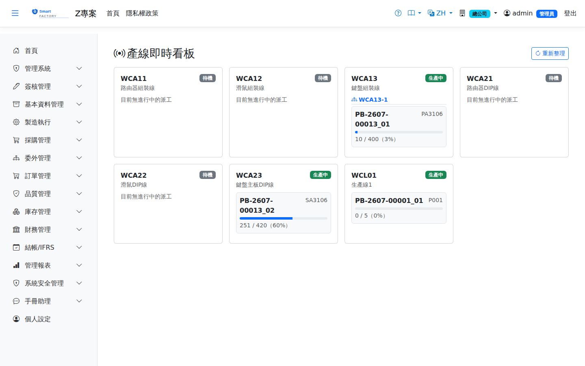

產線即時看板Production Line Status
路由：/LineStatus | 一次總覽全部生產線目前在忙什麼Route: /LineStatus | An at-a-glance view of what every production line is doing
以卡片方式彙整廠內所有生產線（工作中心設定「屬於生產線」者）的即時狀態：目前是生產中、備料中還是待機，正在執行哪些派工、進度百分比，以及目前在線/備料人員名單與已在崗時長。純即時快照，不需查詢條件，畫面每 30 秒自動重新整理，也可手動點「重新整理」立即更新。Gathers every production line in the plant (work centers flagged as a line) into cards showing its live status — producing, staging or idle — which dispatches are running and their progress percentage, plus who is currently online or staging and how long they have been on the job. It is a pure live snapshot with no query criteria; the page refreshes every 30 seconds and can also be refreshed on demand with "Refresh".

產線即時看板畫面截圖（示意，實際欄位/資料依權限與查詢條件而異）Line status board screenshot (illustrative; actual fields and data vary by permission and query criteria)
畫面內容Screen contents
| 項目Item | 說明Guide |
|---|---|
| 狀態標籤Status labels | 生產中In production 該線有派工正在報工執行；a dispatch on the line is being reported; 備料中Staging in progress 有派工正在整備尚未開始生產；a dispatch is being set up but production has not started yet; 待機Idle 目前無進行中的派工No active dispatch |
| 派工卡片Dispatch card | 顯示工單號、品號、已完成量／應完成量與進度百分比（每張進行中派工各一張）Shows the work order number, item, completed / target quantity and progress percentage (one card per dispatch in progress) |
| 目前在線人員People currently online | 該派工目前開工中（報工 Session 未結束）的作業員名單，附已在崗時長The operators currently working (session not yet ended), with how long they have been on the job |
| 目前備料人員Currently preparing | 該派工目前整備中（Setup 未結束）的作業員名單，附已整備時長The operators currently setting up (setup not yet ended), with how long they have been at it |
本畫面僅顯示This screen only shows 目前所屬廠別Your current plant的生產線，且僅列出設定為「生產線」的工作中心；一般機台型工作中心不會出現在此看板。 lines, and only work centers configured as a production line are listed; ordinary machine-type work centers do not appear on this board.
相關畫面Related screens
派工作業Dispatch Operations（實際開工/報工/完工操作）、 (actually starting, reporting and finishing), 生產準備看板Preparation Board（開工前的物料/模具準備狀況） (material and tooling readiness before work starts)